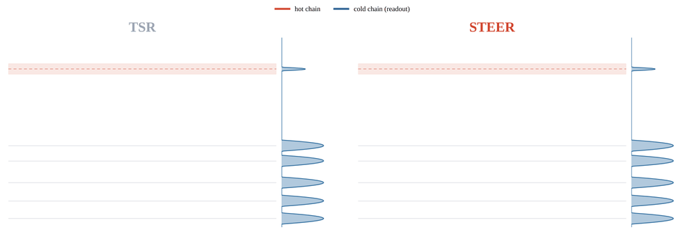

Diffusion models achieve strong generative performance across domains. However, achieving high sample quality under hard physical and dynamical constraints, as in protein design and robotic manipulation, remains difficult. Existing inference-time methods either require a costly or unavailable verifier, or avoid a verifier at the cost of reduced diversity. To relieve this tension, we introduce Score Tempering with Exchange between Exploratory Replicas (STEER), a verifier-free inference-time method that replaces single-chain sharpening with global search using multiple diffusion chains. During sampling, neighboring chains, each at different sharpening strengths, exchange particles according to an energy-based acceptance rate, propagating exploration to outputted samples. Across a diverse range of domains, from synthetic multimodal distributions to image generation, STEER achieves a better fidelity–diversity trade-off and improves success rates on continuous-control tasks in both verifier-based and verifier-free settings. Our findings suggest that effective diffusion tempering requires going beyond local updates to population-based global search that enhance fidelity and diversity.



Lowering the temperature sharpens samples, but a single chain pushed to low temperature tends to lose semantic fidelity to the prompt. STEER exchanges samples with higher-temperature replicas, allowing low-temperature sampling that stays sharp without sacrificing semantic fidelity.
High-temperature replicas explore the space of possible trajectories more broadly, while swaps with low-temperature replicas let promising trajectories cool down into precise plans that follow the maze walls.
@article{wu2026steer,
title = {Diverse Low-Temperature Diffusion Sampling through Replica Exchange},
author = {Wu, Zoe and Balim, Haldun and Du, Yilun},
year = {2026}
}